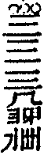

自敘
余己丑參學聖佛時偕二三知友閒拈古人機緣著頌百則進呈慶忠本師本師叱曰用絡索作麼余唯唯而退越明年庚寅住楚之九峰休夏無事因西脈學人等請益復拈頌百則共前二百則止存其稿十數年來將為蠹魚窟宅未肯輒以示人大都頌古一途從上古錐沿為蹊徑其行世流傳者皆出宗匠名家一字一句堪為後進輩抽釘拔楔余何人斯敢妄附先蹤擅為遺臭奈諸及門殷勤三請不獲已乃出稿以菑棗梨噫過矣來上座學淺才疏鮮所聞見一知半解臆鑿古人之高深是猶以管窺天而蠡測海也博大觀之鄙笑買明眼之譏彈有由然矣知我罪我余何辭焉恁麼告報設有個旁不肯底出來道這老漢是甚麼心行三十棒且教誰喫。
目畢
三山來禪師語錄卷九
頌古(著拈)
舉世尊初生(禍胎出也)一手指天一手指地周行七步目顧四方云天上天下唯吾獨尊(面皮厚多少)雲門偃云我當時若見一棒打殺與狗子喫貴圖天下太平(是甚麼心行)。
拈云千古含冤一朝雪恨都是事出無端未免遭人檢點若檢點得出許你有知恩分。
舉世尊陞座(作麼作麼)文殊白槌云諦觀法王法法王法如是(尊鑑不錯)世尊便下座(好不慚惶)。
舉梁武帝問達磨如何是聖諦第一義(向上些問來)磨云廓然無聖(劈腹剜心)帝云對朕者誰(蹉過了也)磨云不識(儘力道不出)帝不契(蒼天蒼天)遂渡江到少林面壁九年(一場特地)。
拈云鐵獦狚無容下口頑石頭未免懷疑話不投機別圖方便且置大小祖師一經頓挫莫道冷坐九年直至而今無轉身吐氣分。
舉百丈一日再參馬祖馬祖一喝(潑油救火)百丈三日耳聾(雪上加霜)黃檗聞舉不覺吐舌(耳裡著不得水)。
舉僧問五祖戒如何是佛(問阿誰)祖云踏著秤錘硬似鐵(下腳時一場懡[怡-台+羅])。
拈云多虛不如少實。
舉藥山與雲巖遊(切忌隨他去)山腰間刀響(還聞麼)巖云甚麼作聲(也須問過)山抽刀劈口一斫(險)。
拈云雲巖耳根不清殊覺探頭太過藥山據令而行要且不是好手何故我王庫內無如是刀。
舉僧問道吾如何是和尚深深處(淹殺闍黎)吾下禪床作女人拜云(老婆禪)謝子遠來無可祗待(餿飯祭閑神)。
拈云九重密處禁殿苔侵丹陛陞時綸音下降欲叩深宮意旨須聽暗裡傳宣還有識得此消息底麼。
舉三聖問雪峰透網金鱗未審以何為食(埋兵掉鬥)峰云待汝出網來即向汝道(撥草瞻風)聖云一千五百人善知識話頭也不識(引得狼來屋裡屙)峰云老僧住持事繁(火到頭來忙撥撒)。
拈云事窮則變理極無私膽大如斗輸他三聖冒敵衝鋒心空若谷賴有雪峰讓人退己冰稜上走馬劍刃裡橫身幸爾毫髮無傷且喜精神倍躍這裡見得竹連煙霧和雲亂溪接松濤夾玉鳴如或未然切莫枉屈先德。
罷業忘功奉重難減伊聲價忒無端高山流水期相識洗耳掛瓢獨自閑南山石北山田君乘馬兮我乘船煙波弱柳開新綠兩樣風流一樣看。
舉米胡令僧問仰山(合同文券何須勘驗)今時人還假悟否(你若無心我也休)山云悟即不無(太平本是將軍定)爭奈落第二頭何(不許將軍見太平)僧回舉似米胡胡深肯之(將錯就錯)。
拈云悟之一字眾妙之門悟之一字眾禍之門且道入此門底是出此門底是第一頭如何薦取。
舉百丈有時上堂眾纔集(蟻從羶處聚)云喫茶去便下座(口乾舌渴)有時上堂眾纔集(蠅向臭邊飛)云珍重便下座(儘力收拾)有時上堂眾纔集(隨群逐隊)云歇便下座(今日勞倦)眾罔措(甚處去來)。
拈云百丈弄盡伎倆都是些驢糞氣若有人出來掀倒禪床管教抽身無路利害在甚麼處。
舉龐居士問馬祖不與萬法為侶者是甚麼人(太尊貴生)祖云待汝一口吸盡西江水即向汝道(太饒舌生)。
拈云龐公向萬仞峰頭置一問千巖俱墮馬祖從大洋海裡措一辭萬派齊吞既識脫體無依更要和根打斷為甚如此白雪飄時山色老清霜落處樹枝寒。
舉趙州問投子大死底人卻活時如何(酒逢知己飲)子云不許夜行投明須到(詩向會人吟)。
拈云死之與活霄壤也夜之與明吳越也而不知天地一氣南北同區兩老異口同音懸空話出詞簡而盡理約而該只是謾我三山不得。
舉黃檗示眾云(淨眼裡撒沙)汝等諸人(為憐三歲子)盡是噇酒糟漢(不惜兩莖眉)我當時若與麼行腳(貧兒思舊債)何處更有今日(將謂有多少奇特)還知大唐國裡無禪師麼(具甚麼眼便恁麼道)時有僧出云只如諸方匡徒領眾又作麼生(打鼓弄琵琶)檗云不道無禪(是甚死貓頭)秪是無師(珍重黃檗老漢)。
拈云黃檗眼空天下冷口熱腸雖是引正後昆不怕諸方檢點還免得自己分上麼身為浪子偏憐客慣愛貪杯識醉人。
舉法眼以手指簾(牽藤引蔓)時有二僧同去捲簾(認影迷頭)眼云一得一失(惑亂不少)。
拈云二僧總不伶俐若向未指以前薦得只合拂袖而行豈至落他圈繢法眼縱有殺人刀活人劍終是明眼難瞞。
舉石鞏張弓架箭以待學者(今日如何舉似人)三平詣之(赤身挨白刃)鞏云看箭(不是好手)平乃披襟當之(喪身失命)鞏云三十年來張弓架箭只射得半個漢(且莫壓良為賤)。
舉僧問曹山佛未出世時如何(佛)山云曹山不如(大卑生)僧云出後如何(非佛)山云不如曹山(太尊生)。
拈云威音那畔恰好逍遙現世門中止堪遊戲坐著則仰望不及走殺則猶落後塵豈真貴賤分途但要後先合轍曹山道個如與不如也直是較長比短。
舉無為泰豎拂子云(金屑雖貴落眼成翳)會得喚作禪(明明百草頭明明祖師意)不會果然難(一片白雲橫谷口許多歸鳥盡迷巢)難難(銀山鐵壁)目前隔個須彌山(面壁而立)易易(屙屎放尿)信口道來無不是(那塊不是精底)。
別云不會喚作禪會了果然難須彌山開眼即是信口道全沒來由放下著一齊破要問諸人如何是一齊破。
舉僧問玄沙如何是和尚親傳底事(低聲些)沙云我是謝家兒(面赤不如語直)。
舉一僧過天龍(圖個甚麼)龍豎一指示之(不因樵子徑)僧大悟(爭到葛洪家)後示寂云吾得天龍一指頭禪(過後思君子)一生受用不盡(三十年不少鹽醬)。
拈云一指頭禪有甚交涉賺殺阿僧終身活埋而今豎指者多矣得此受用者幾人哉千載而下令人浩嘆。
舉僧問巖頭起滅不停時如何(家鬼作祟)頭咄云(合取狗口)是誰起滅(識得不為冤)。
拈云巖頭有定亂機謀且無太平贊畫這僧被這一咄不知腦後重了多少。
舉僧問趙州如何是趙州(曾到此間麼)州云東門南門西門北門(莫言不道)。
舉僧問青原如何是佛法大意(占南問北)原云廬陵米作麼價(指東劃西)。
舉善道遭沙汰時(退身有分)常以拄杖示眾云(不勞拈出)過去諸佛也恁麼(一二三)未來諸佛也恁麼(四五六)現在諸佛也恁麼(七八九)。
舉南泉示眾云王老師要賣身(窮思變)阿誰要買(不是冤家不聚頭)一僧云某甲買(也須照貨還錢)泉云他不作貴價(千金不換)不作賤價(一文不值)汝作麼生買(上下些)僧無對(鈍滯殺人)趙州代云(搶行奪市)明年來(饒賣不賒)與和尚縫個布衫(切忌粗針大線)。
舉僧問柏巖如何是道(腳下底)巖云徒勞車馬跡(何不早道)。
拈云尋蹤訪跡程途轉賒涉水登山白雲萬里直須離卻行市珍重腳頭庶幾少分相應不然青天白日走殺多少人。
舉僧辭歸宗云某甲往諸方學五味禪(這山望著那山高)宗云我這裡有一味禪為甚不學(飯籮邊餓殺多少人)僧云如何是一味禪(鈍鳥逆風飛)宗便打(有甚奇特處)。
拈云這僧貪多嚼不爛歸宗拈葉止兒啼別有知甘識苦底麼莫將閑學解埋沒祖師心。
舉僧問九峰如何是西來意(忘卻了也)峰云一寸龜毛重九斤(不信道)。
拈云權然後知輕重度然後知長短九峰恁麼道曾經權度也無美則美矣西來意未夢見在。
舉仰山指雪獅子云還有過得此色者麼(認著即不可)眾無對(代云和尚莫眼花)雲門云當時便與推倒(秋去枝頭瘦)雪竇云只解推倒不解扶起(春來樹底花)。
拈云三老各見一邊何曾道得越格一句更殘夜盡青鴉亂好把風流對曉粧。
舉子昭首座問法眼長老開堂承嗣何人(撩蜂剔蝎)眼云地藏(冤有頭)昭云太辜負長慶先師(黨理不黨親)眼云某甲不會長慶一轉語(是何言與)昭云何不問(自坑自陷)眼云萬象之中獨露身意作麼生(生澀鑰匙投舊鎖)昭豎起拂子(似即似)眼云此是長慶處學得底(是即未是)首座分上又作麼生(更與一捏)昭無語(早知今日悔莫當初)眼云秪如萬象之中獨露身是撥萬象不撥萬象(撲牛不用索)昭云不撥(頂門上去了三魂)眼云兩個(車不橫推)參隨左右皆云撥萬象(腳板底鑽了七魄)眼云萬象之中獨露身聻(理無曲斷)。
拈云臨場話墮當面熱瞞惹起許多鬧亂如何得打斷去似訥始平分別路如愚方塞是非門。
舉明安問梁山如何是無相道場(睜眼覷不著)山指觀音云這個是吳處士畫底(白日換人睛)安擬議(猶隔一重關)山急索云這個是有相底那個是無相底(放過即不可)安於言下有省(穿過髑髏)禮拜了歸位(也不消得)山云何不道取一句(還我話頭來)安云道即不辭恐上紙墨(點污了也)山呵呵云此語上石去後果上碑(莫是遭他授記來)。
拈云一槌兩槌便當再三再四叮嚀機關在甚麼處枯龜妙入孫臏手一灼爻分十字文。
舉風穴示眾云昔日世尊以青蓮華目顧迦葉正恁麼時且道說個甚麼(不勞重舉)首山便下去(失卻一隻眼)。
拈云風穴雖是憐兒塗乳苦其實眉毛去了大半首山縱然伶俐猶覺不堪種草何故從門入者不是家珍。
舉良遂座主見麻谷(今日且罷講)谷閉門不接(老婆心切)遂次日再往(不得封侯志不休)谷復閉門(再斯可矣)遂乃叩門(金龍失水)谷問阿誰(妙翅急提)遂擬應名(如是如是)忽然有省(不是不是)乃云和尚莫謾良遂(向你道甚麼)良遂不來見和尚(失腳了也)幾被經論賺過一生(又被麻谷賺過)谷乃印可(土上加泥)。
舉僧問雲門不起一念還有過也無(且信一半)門云須彌山(平地起孤堆)。
拈云這僧將謂把火燒山一燎便盡雲門拈個沒量底攔路頓著令伊出入無門這裡稍作商量未免滿腔荊棘。
舉雪峰拈拄杖示眾云這個秖為中下根人(放下著)時有僧出云忽遇上上人來時如何(自有方便)峰拈拄杖便去(今日失利)。
拈云雪峰一放一收反成多事若是遇著作家奪來拗作兩段又看如何轉身。
舉僧問首山如何是佛(抱鏡問卜)山云新婦騎驢阿家牽(一場笑具)。
拈云喉中討氣絃上覓音到底無伊入處會得本地風光一任隨時瀟灑要見首山答處麼。
舉鹽官一日喚侍者與我過犀牛扇子來(用他作麼)者云扇子破也(真語者)官云扇子既破還我犀牛兒來(只恐觸忤和尚)者無對(切忌動著)資福畫圓相於中書一牛字(破也破也)。
拈云鹽官追索過情侍者若解當面奉掌豈不團圞拈出更待資福補綴終是頭角不全此外有別呈伎倆麼還我犀牛兒來。
舉雲門云乾坤之內宇宙之間(大好著眼)中有一寶秘在形山(是甚麼)拈燈籠向佛殿裡(囌嚕囌嚕)將三門來燈籠上([口*悉]唎[口*悉]唎)。
舉慈明冬日牓僧堂作此字(節候嚴寒何勞神用)其下注云(蛇腹添足)若人識得不離四威儀中(猶有這個在)首座見云和尚今日放參(覷破了也)明聞而笑之(一場懡[怡-台+羅])。
拈云理無蹴至功不浪施金繩裡外牢拴玉液當頭迸出一陽丁來復梅開雪嶺生香七日見天心水涸冰河解凍到這裡泥牛懽笑石女謳歌須是恁麼人始解恁麼事試看慈明作字雖然體勢未完要且意隨筆到首座一言道破謂復具眼不具眼三千劍客今何在獨許莊周見太平。
剝盡群陰返自然後天天復先天天風花雪月平生趣興罷歸來抱枕眠個中事對誰傳援毫淡淡點雲煙承家有子應須薦笑語相將學賣顛。
舉外道問世尊不問有言不問無言(止止不須說)世尊良久(謝答話)外道讚歎云世尊大慈大悲(莫謗伊好)開我迷雲(不因柳毅傳鄉信)令我得入(何緣得到洞庭湖)。
拈云外道被世尊一杓惡水脫盡皮膚單留三寸舌頭頌恩讚德雖然如是也是白日著鬼。
舉溈山問仰山甚處來(老老大大來處也不識)仰云田中來(如實通供)山云田中多少人(較甚多寡)仰插鍬叉手而立(暗裡抽橫作)山云南山大有人刈茅(費手腳生)仰拈鍬子便行(明中坐舌頭)。
拈云功勳邊事坐則成偏向上關頭踏著便轉機前接引格外承當除是溈仰父▆▆有喚不回頭底立地死人如麻似粟。
舉五祖演舉一秀才著無鬼論(只恐杜撰得來)一日鬼現身云你道無我聻(咦)秀才無語(啐)。
拈云見怪不怪其怪自壞叵耐這秀才有心無膽若能當面便唾教伊逃竄無門。
舉僧問黃連如何是聲前一句(劄)連云聲前無句(又恁麼口喃喃)聲後問將來(不禮拜更待何時)。
舉臺山路上有一婆子(冤家路窄)凡有僧問臺山路向甚麼處去(看腳下)婆云驀直去(喏喏)僧纔行(蹉過了也)婆云好個阿師又恁麼去也(口是兩片皮)僧舉似趙州(好話通六耳)州云待我與勘過(老不歇心)州亦如前問(將謂別有)婆亦如前答(再來不值錢)州回上堂云我為汝勘破婆子了也(明眼難瞞)。
拈云此段公案卜度者盡道婆子止得一橛之機不知如大冶精金終無變色畢竟趙州勘破在甚麼處良久云將謂無人。
搖唇鼓舌傍層巒多少行人被熱瞞潦倒趙州旁不肯一回勘破太無端臺山路去者難白雲覆處數峰寒茅蘆草徑依然在踏破莓苔露未乾。
舉藥山一日在石上坐(動著即不可)石頭見問云在這裡作甚麼(隨分納些些)山云一物不為(今日勞倦)頭云恁麼則閑坐也(水浸麻繩一股股緊)山云閑坐即為也(火燒竹筒一節節熱)頭云汝道不為不為個甚麼(且聽分解)山云千聖亦不識(舉此話也大難)。
舉無著到五臺(草鞋錢聻)喫茶次(湯水錢聻)文殊拈起玻璃盞(放下著)問南方還有這個麼(不道不道)著云無(文殊失利)殊云尋常將甚麼喫茶(無著失利)著無語。
代云手中底聻。
舉僧問曹山世間甚麼物最貴(○這個)山云死貓兒頭最貴(好惡也不識)僧云為甚死貓兒頭最貴(不妨疑著)山云無人著價(道破不值錢)。
拈云是即是且將甚麼喚作死貓頭莫道著價無人即天眼龍睛也覷他不著。
舉僧問白雲藏如何是和尚深深處(為伊不薦)藏云矮子渡深溪(出頭道一句來)。
舉馬大師不安(有不病底在)院主問和尚近日尊候如何(師資分上)大師云日面佛月面佛(何不忌口)。
拈云馬師一言之下針劄不入水泄不通且作麼生卜度本自無瘡勿傷之也。
舉僧問投子凡聖相去幾何(咄)子下禪床立(一時頓斷)。
拈云投子裝模作樣手腳不穩若待這僧問時痛與一頓免得向凡聖相去處躲根還識伊做處麼天隨明月淨水共白雲閑。
舉僧問九峰如何是頭(草枯鷹眼疾)峰云開眼不覺曉(切忌隨他去)僧云如何是尾(雪盡馬蹄輕)峰云不坐萬年床(迢迢與我疏)僧云有頭無尾時如何(漁翁就市忘家冷)峰云終是不貴(奴兒婢子徒勞力)僧云有尾無頭時如何(野老關門獨自眠)峰云雖飽無力(露柱燈籠話寂寥)僧云直得頭尾俱稱時如何()峰云兒孫得力(借君拄杖登山水)祖父不知(衲被蒙頭萬事休)。
拈云靈枝劫外覆卻今時現世門頭終歸實際老漁串錦扁舟一葉泛渺茫牧子橫牛鐵笛數聲吹巖畔若終始路絕先後途窮合作麼生夜深不向蘆灣宿迥出中間與兩頭。
雲從龍風從虎陰陽變動興雷雨指南一道智猶疏瑞草無根德亦腐過量人沒區宇午夜常懸帝網珠當軒慣打細腰鼓。